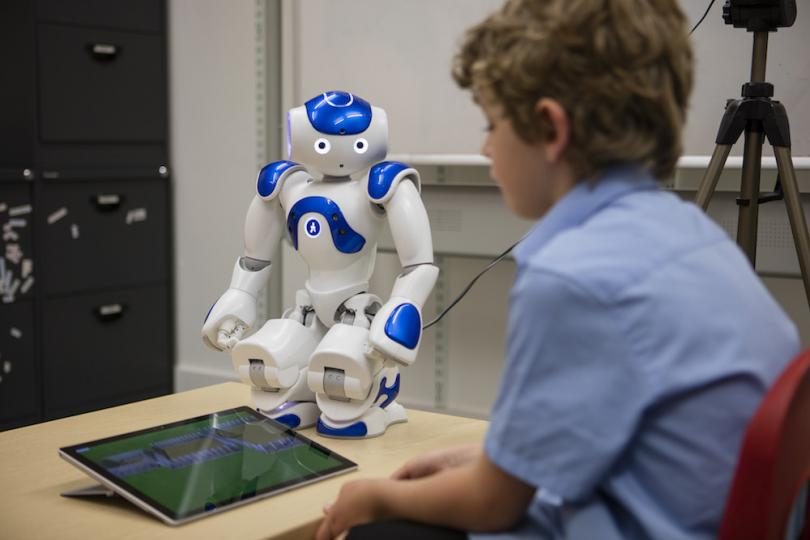

Robô Robin que ensina crianças a falar novas línguas
O primeiro caso de estudo é um projeto piloto executado na Alemanha, o robô chamado Robin. Um robô com formato humanóide e uma expressão amigável, tem como objetivo ensinar crianças de 4 a 6 anos a falar novas línguas.